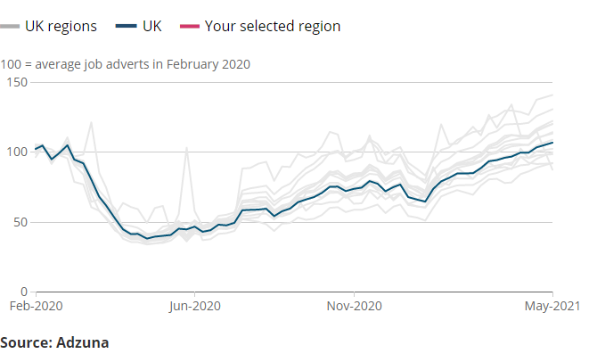

Select a region or country to compare against the UK index

The chart canvas is hidden from screen readers. The main message is summarised by the chart title and the data behind the chart is available to download below.